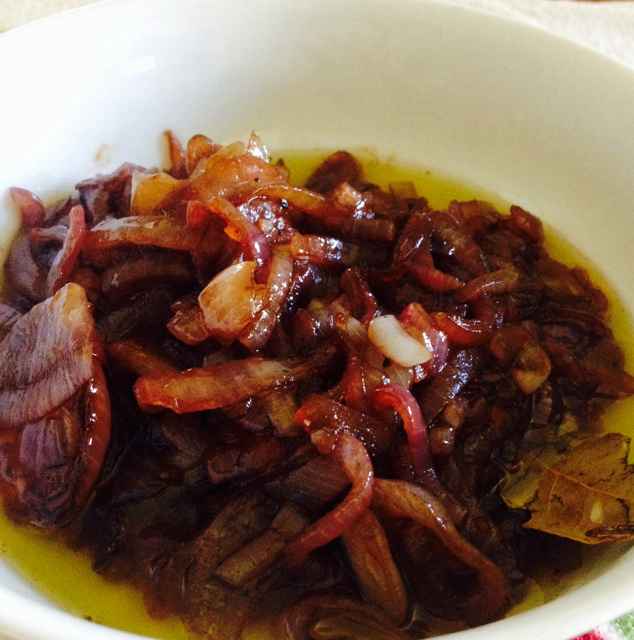

Cebollas Caramelizadas
20/Mar/2017
Prueba estas deliciosas cebollas caramelizadas para acompañar todos tu platillos desde un pannini gourmet hasta una carne.
Ingredientes
-
2 cebollas moradas
-
4 cucharadas de aceite de oliva
-
1 cucharada de vinagre balsámico
-
1/2 taza de miel
-
Sal y pimienta
-
1 hoja de laurel
-
2 cucharadas de vino tinto
Preparación
Cortar la cebolla en juliana de forma muy fina.
Poner las cebollas en un sartén caliente con las cuatro cucharadas de aceite de oliva, sazona con pimienta y sal. Tápalo y cocina a fuego muy bajo por 20 minutos, ocasionalmente destapa y mueve las cebollas. Las cebollas liberarán un líquido, una vez que pase esto destapa y deja que se evaporice. Deja cocinando las cebollas hasta que se hagan suaves.
Agrega la miel y cocina por otros minutos. Agrega la hoja de laurel y el vino tinto y cocina hasta que se haga como una especie de miel, más o menos por una hora. Mueve ocasionalmente.
Agrega el vinagre balsámico y deja que regrese a la consistencia de como un tipo de miel. Prueba y agrega sal, pimienta si crees necesario. Sube un poco el fuego y remueve constantemente hasta que las cebollas se vuelvan brillosas y tengas una consistencia suave.
Información nutricional
*Porcentaje de valores diarios basado en una dieta de 2,000 calorías.
Calorías
557
kcal
28%
Carbohidratos
131
g
44%
Proteínas
3.3
g
6.6%
Lípidos
0.4
g
0.4%
Fibra dietética
5.1
g
10%
Azúcares
109
g
122%
Colesterol
0.0
mg
0.0%
Calificaciones (1)
Laura Silva
Muy buena para acompañar carnes, la recomiendo.